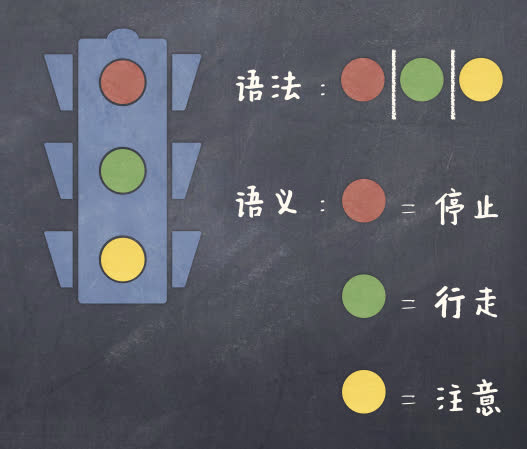
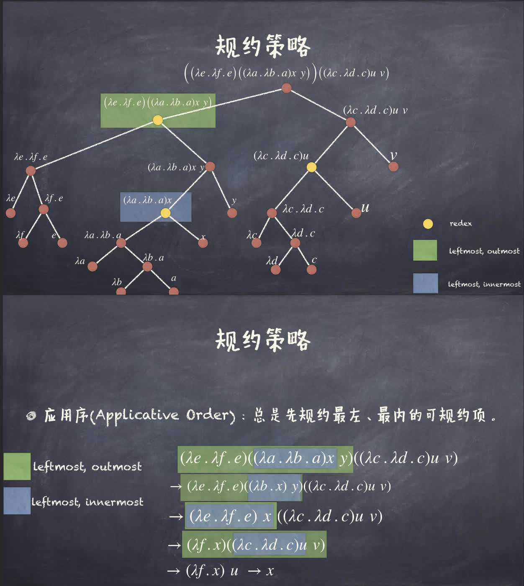
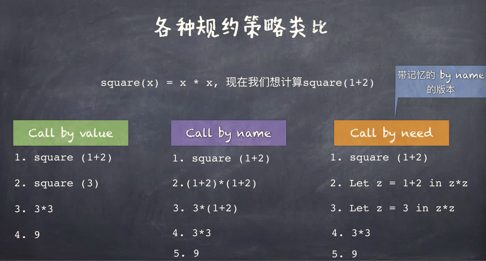

函数式编程（Functional Programming）
函数式编程是一种编程范型，其通过函数作用和复合来构造程序。它是声明式范型（Declarative Programming）的一种。与命令式的通过语句串改变状态不同，它使用一系列的函数表达式完成值到值的映射来表达计算。
函数作为一等公民（First-class Citizen）是函数式编程的一个重要特性。这意味着函数可以作为参数传递给其他函数，也可以作为返回值返回，可以被赋值给变量，可以被存储在数据结构中。
Lambda 演算
定义
- 语法（Syntax）：构成合法程序的写法规则
- 语义（Semantics）：描述所写程序的运行行为

语法
λ 项或 λ 表达式的 BNF 范式（巴科斯范式，Backus-Naur Form）：
λ 项M,N::=变量x∣λx.M∣MN
具体解释：给定一个无限的变量集合 V，让 A 为一个字符，其要么是 V 中的一个元素，要么是「()λ.」中一个字符，。让 A∗ 为有限的字符串。那么隶属于 λ 表达式的字符串符 Λ∈A∗ 符合如下标准：
- 如果 x∈V，那么 x∈Λ 。
- 如果 x∈V 且 M∈Λ，那么 λx.M∈Λ。
- 如果 M,N∈Λ ，那么 MN∈Λ。
(λx.M)：Lambda 抽象（Lambda Abstraction）
increment = lambda x: x + 1
|
(MN)：Lambda 作用（Lambda Application）。M 作用到 N 上。
M 尽可能右延伸，即 λx.MN 等价于 λx.(MN) 而非 (λx.M)N，λx.λy.x−y=λx.(λy.x−y)
Lambda 作用左结合，即 MNP 等价于 (MN)P。
(λf.λx.fx)(λx.x+1)2→((λf.λx.fx)(λx.x+1))2→(λx.(λx′.x′+1)x)2→(λx.x+1)2→3
高阶函数（Higher-order Function）：
- 函数可以作为返回值返回
- λx.λy.x−y
- 函数可以作为参数传递
- (λf.λx.fx)(λx.x+1)2
柯里化（Currying）：将多参数函数转化为单参数函数的过程。即将 λ(x,y).x−y 转化为 λx.λy.x−y。
1
2
3
4
5
6
| def subtract(x, y):
return x - y
def curry(f):
return lambda x: lambda y: f(x, y)
assert subtract(3, 2) == curry(subtract)(3)(2)
|
逆柯里化（Uncurrying）：将单参数函数转化为多参数函数的过程。即将 λx.λy.x−y 转化为 λ(x,y).x−y。
1
2
3
4
5
6
| def subtract(x):
return lambda y: x - y
def uncurry(f):
return lambda x, y: f(x)(y)
assert subtract(3)(2) == uncurry(subtract)(3, 2)
|
在 λ 表达式，如 λx.x+y 中
- x 为绑定变量（Bound Variable）
- y 为自由变量（Free Variable）
- λx.M 中 M 为 x 的绑定域（Scope），如 λx.x+y 中 x+y 为 x 的绑定域。
α-变换（Alpha Conversion）：改变绑定变量的名字，如 λx.x+y 可以变为 λz.z+y。
自由变量不可重命名，如 λx.x+y 不可变为 λx.x+z。
令 fv(M) 为 M 中自由变量的集合，则
- fv(x)={x}
- fv(λx.M)=fv(M)\{x}
- fv(MN)=fv(M)∪fv(N)
语义
β-归约：(λx.M)N→M[N/x]（N/x 表示用 N 替换 M 中的 x）
使用递归给出替换的严格定义：
x[N/x]y[N/x](MP)[N/x](λx.M)[N/x](λy.M)[N/x]=N=y=(M[N/x])(P[N/x])=λx.M只替换自由变量，不替换绑定变量={λy.(M[N/x])λz.(M[z/y][N/x])如果 y∈/fv(N)如果 y∈fv(N) 且 z∈/fv(M)∪fv(N)
最后一条是为了避免自由变量被绑定，如 (λx.x−y)[x/y] 会变为 λx.x−x。解决方法是将 y 重命名为 z，即 (λx.x−y)[z/y][x/y]=λx.x−z[x/y]=λy.y−z。
递归 β-归约规则⎩⎨⎧M→M′MN→M′NN→N′MN→MN′M→M′λx.M→λx.M′
- β-可约项（β-redex）：以 (λx.M)N 形式出现的 λ 项（reducible expression）
- β-范式（β-normal form）：不包含 β-可约项的 λ 项（无法再进行 β-归约的 λ 项）
汇聚定理（Church-Rosser Theorem）
β-归约无论采用何种归约顺序，最终都会收敛到同一个 β-范式。
M→∗M′=⎩⎨⎧M→0M′M→k+1M′M→∗M′iff.M=M′iff.∃M′′M→M′′∧M′′→kM′iff.∃kM→kM′
归约最多得到一个 β-范式，即 β-范式是唯一的。但有些归约得不到 β-范式，如 (λx.xx)(λx.xx)。
有些归约策略可能会陷入无限循环，例如 (λu.λv.v)((λx.x)(λx.x))
归约策略：
- 应用序（Applicative Order）：总先归约最左、最内的可归约项（先归约参数，再归约函数）
- 一个最外（outmost）的可约项是一个不被其他可约项包含的可约项。
- 一个最内（innermost）的可约项是一个不包含其他可约项的可约项。
- 
- 正则序（Normal Order）：总先归约最左、最外的可归约项（参数未被归约，而是优先替换进函数体内）
如果 λ 表达式存在 β-范式，那么按正则序归约总能归约到 β-范式。
在参数使用不到的情况下，「正则序」（Call by name）会比「应用序」（Call by value）要高效，然而如果参数会用到，而且会重复的话「应用序」（Call by value）要比「正则序」（Call by name）要更加高效。
Call by need 是一种介于 Call by name 和 Call by value 之间的策略，它会将参数的值缓存起来，以避免重复计算。

基于 λ 演算的编程
Church 编码（Church Encoding）：使用 λ 演算来表示自然数、布尔值、元组、列表等数据结构。
- 布尔值
- T≜λx.λy.x
- F≜λx.λy.y
- 操作
- if b then M else N≜bMN
- Not≜λb.bFT
- Not’≜λb.λx.λy.byx
- And≜λb.λc.bcF
- Or≜λb.λc.bTc
TMN→(λx.λy.x)MN→(λy.M)N→MFMN→(λx.λy.y)MN→(λy.N)N→NAnd Tb→(λb.λc.bcF)Tb→(λc.TcF)b→TbF→bAnd Fb→(λb.λc.bcF)Fb→(λc.FcF)b→FbF→FOr Tb→(λb.λc.bTc)Tb→(λc.TTc)b→TTb→TOr Fb→(λb.λc.bTc)Fb→(λc.FTc)b→FTb→b
皮亚诺公理
- 0 是自然数。
- 对于任意自然数 n，n 的后继 n′ 也是自然数。
- 对于每个自然数 m,n，m=n 当且仅当 m 和 n 有相同的后继。
- 0 不是任何自然数的后继。
- 若 A 是一个性质，且 A(0) 成立，且对于任意自然数 n，A(n) 成立时，A(n′) 也成立，则 A(n) 对于所有自然数 n 都成立。
从而可以这样对自然数进行编码：
- 定义 0
- 定义后继函数 S（递归 n 次记作 Sn，从而有 n=Sn(0)）
邱奇数（Church numeral）
- 0≜λf.λx.x
- 1≜λf.λx.fx
- 2≜λf.λx.f(fx)
- ⋯
- n≜λf.λx.fnx
当把函数和变量作用于 Church 数时，相当于对函数进行了 n 次迭代，即
ngy=(λf.λx.fnx)gy=(λx.gnx)y=gn(y)
定义自增运算（基于上面的迭代）
Inc≜λn.λf.λx.f(nfx)Inc′≜λn.λf.λx.nf(fx)
定义加法运算（模仿自增运算，实际上上面省略了 1）
Add≜λm.λn.λf.λx.nf(mfx)
定义乘法运算需要注意到 fm×n=(fm)n，因此
Mult≜λn.λm.λf.λx.n(mf)x
定义对零的判断
IsZero≜λn.n(λx.F)T
IsZero0=(λn.n(λx.F)T)0=0(λx.F)T=TIsZeron=(λn.n(λx.F)T)n=n(λx.F)T=F
对有序对（Pairs）的编码
Pairπ0π1≜λx.λy.λf.fxy≜λp.pT≜λp.pF
π0(PairMN)=(λp.pT)((λx.λy.λf.fxy)MN)=(λx.λy.λf.fxy)MNT=TMN=Mπ1(PairMN)=(λp.pF)((λx.λy.λf.fxy)MN)=(λx.λy.λf.fxy)MNF=FMN=N
对元组（Tuples）的编码（仿照有序对）
Tupleπi≜λx1.⋯.λxn.λf.fx1⋯xn≜λp.p(λx1.⋯.λxn.xi)
递归
但这样还不具有通用编程能力，因为不能递归。
之前定义的函数严格意义上其实是宏（Macro），是代表的 Lambda 表达式的缩写。
对于函数 f(x)，使得 x=f(x) 成立的 x 称为 f 的不动点（Fixed point）。
类似的，递归的实质在于 f=F(f)，即 f 是 F 的不动点。
将阶乘函数 Fact 写成 f=F(f) 的形式：
Fact=λn.if (n==0) then 1 else n×Fact(n−1)=(λf.λn.if (IsZeron) then 1 else n×f(n−1))Fact=(λf.λn.(IsZeron)1(n×f(n−1)))Fact
虽然数学函数 f 有可能没有不动点，但是 Lambda 表达式 F 一定有不动点。
不动点组合子（Fixed-point combinator）是一个高阶函数 h 满足，对于任意函数 f，hf 是 f 的不动点，即 hf=f(hf)。存在无数个不动点组合子。
- 图灵不动点组合子 Θ
- 令 A=λx.λy.y(xxy)
- 令 Θ=AA
- 邱奇不动点组合子 Y
- 令 Y=λf.(λx.f(xx))(λx.f(xx))
菜单
老师给了个链接，鳄鱼和蛋，「形象」地解释了 Lambda 演算的基础规则，看完了，挺绷不住的。
停机问题
Lambda 演算的停机问题，即判断一个 Lambda 表达式有没有 β-范式。
假设存在一个高阶函数 h 可以判定停机问题，其以一个 Lambda 表达式 f 为参数（即 hf），当 f 存在 β-范式时返回 T，否则返回 F。
记
{I≜(λx.x)Ω≜(λx.xx)(λx.xx)
显然 I 有 β-范式，Ω 无 β-范式。
定义
P≜λx.h(xx)ΩI
考察 PP，若 PP 有 β-范式，则 PP 会等于 Ω，即没有 β-范式；若 PP 无 β-范式，则 PP 会等于 I，即有 β-范式。从而产生了矛盾，因此不存在这样的高阶函数 h。